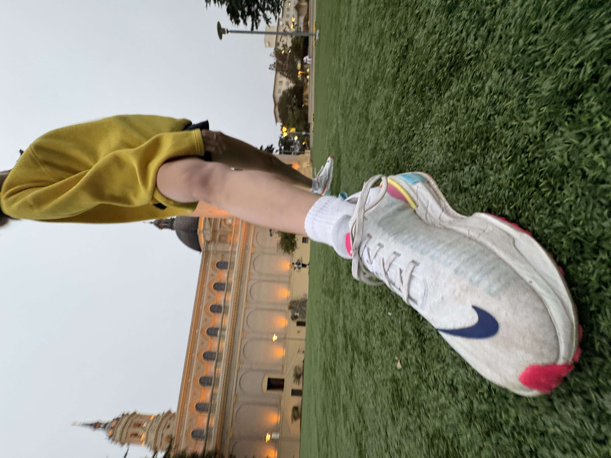

Nike Invincible 3
Few things make me happier than my Nike Invincible 3s. From my very first run in them, the soft cushioning felt like running on clouds. Every step feels light and effortless, with just the right mix of comfort and bounce. Over time, they’ve become more than just running shoes—they’re kind of a symbol of motivation and self-discipline for me. Whether I’m jogging through Golden Gate Park or going out for a quick run, my Invincible 3s always remind me why I love to move. They don’t just bring me joy—they keep me inspired.
